Intro
Plots in R
ggplot2 plotting system
Víctor Granda
Technician at CREAF
Data
R comes with example data sets, allowing us to use them to get confidence
with the different analyses and functions we can perform. If you want to see
all the data sets installed and a brief description type
library(help = "datasets") in the console.
Today we will be using the iris data set. It was collected by Edgar Anderson in
1935, measuring the sepal and petal length and width of 50 Iris flowers of
3 different species (I. setosa, I. versicolor, I. virginica).
More info about the data:
- Anderson, E (1935). The irises of the Gaspe Peninsula, Bulletin of the American Iris Society, 59, 2–5.
- Fisher, R. A. (1936) The use of multiple measurements in taxonomic problems. Annals of Eugenics, 7, Part II, 179–188.
# See the data
iris
Plots in R
R not only allows for diverse analyses (a lot really!), but also implements a powerful graphic motor:
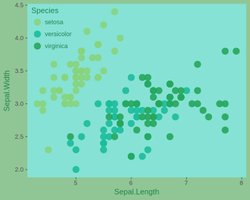
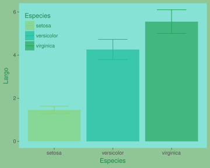
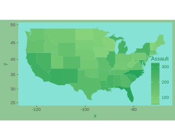
Plots in R
Plot systems in R
base
lattice
ggplot2
Plots in R
1. base
- Empty "canvas"
- First a high level function (
plot(),hist()...) - Add annotations (lines, text...) using low level functions (
text(),title(),abline()...)
- First a high level function (
- Previous planning
- There is no undo
- This has its importance when building complex graphs
- Difficulty to follow up by others
- TLDR: A concatenation of functions
Plots in R
1. base
# Build the plot
plot(Petal.Width ~ Petal.Length, data = iris)
# a model to get the ab line
model.1 <- lm(Petal.Width ~ Petal.Length,
data = iris)
abline(model.1)
# Add equation as text
intercept <- round(model.1$coefficients['(Intercept)'],3)
slope <- round(model.1$coefficients['Petal.Length'],3)
mtext(paste('y = ', slope, 'x + ',intercept,
sep = ''))
# Add a title
title(main = 'Length vs. Width (Petal)')
Plots in R
2. lattice
lattice package
library(lattice)
Only one function to plot (
xyplot(),bwplot()...)- Only one function means supply a lot of information about the plot in only one order
Used a lot for conditional plots:
- $Y \sim X:Z$
Automatic establishment of margins
Plots in R
2. lattice
- Cons:
- Complicated to set all the arguments in one function (a lot of arguments)
- Plot annotations are counterintuitive
- Plot design can be complicated
- There is no plot after-editing
Plots in R
2. lattice
# Build the plot with all the options we need
library(lattice) # Load the library first
xyplot(Petal.Width ~ Petal.Length | Species,
data = iris,
scales = "free",
layout = c(2, 2),
auto.key = list(x = .6, y = .7,corner = c(0, 0)))
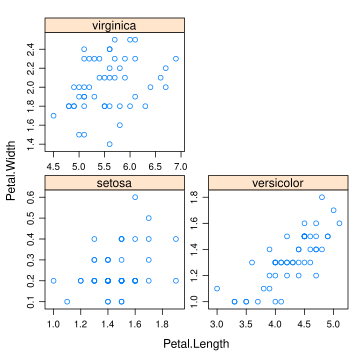
Plots in R
3. ggplot2
- ggplot2 package
library(ggplot2)
- Based on Leland Wilkinson's "The Grammar of Graphs"
- Middle point between base and lattice
- Automatically in charge of plot formatting (text, titles, margins, colors...)
- It does a lot of thing by default
- But they can be changed as we want
- Easy to use
Plots in R
3. ggplot2
# Load library
library(ggplot2)
# Draw the plot
plot1 <- ggplot(data = iris, aes(x = Petal.Length,
y = Petal.Width,
color = Species)) +
geom_point()+
stat_smooth(method = lm)+
stat_smooth(mapping = aes(x = Petal.Length,
y = Petal.Width),
data = iris, method = lm,
color = 'black', se = FALSE)
# see the plot
plot1
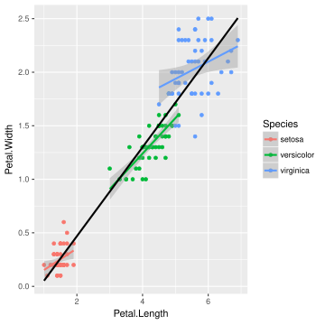
Plots in R
3. ggplot2
plot1 +
theme_bw()+
labs(title = 'Length vs. Width (Petal)',
x = 'Width', y = 'Length')+
theme(plot.background = element_rect(fill = 'transparent'),
panel.background = element_rect(fill = 'transparent'),
legend.background = element_rect(fill = 'transparent'),
legend.key = element_rect(fill = 'transparent'),
panel.grid = element_blank(),
panel.border = element_rect(colour = 'black'),
legend.position = c(.8,.2))
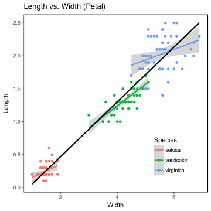
Think before plotting!!
Before starting to building the plot we need to stop and think:
Where are we going to use the plot?
- Screen (web, presentations...)
- Paper, file (reports, publications...)
How complex will be the plot?
- A lot of data
- Little data
Will be resizing a thing?
- vectorial formats (eps, svg, pdf)
ggplot2 Plotting System
ggplot2
Intro
ggplot2package by Hadley Wickham:install.packages('ggplot2', dep=TRUE)library(ggplot2)Leland Wilkinson's "Grammar of graphics" implementation
"In brief, the grammar tells us that a statistical graphic is mapping
from data to aesthetic attributes (colour, shape, size) of geometric
objects (points, lines, bars). The plot may also contain statistical
transformations of the data and is drawn on a specific coordinate system".
ggplot book
ggplot2
Basic concepts
- Same concept as base: empty canvas
- Data must be in a
data.frame - Basic function:
ggplot - IMPORTANT Factors are better named:
Control,Trat_AyTrat_Binstead of1,2and3
ggplot2
Basic concepts
- Main components of a ggplot plot
- Data: a data.frame
- aesthetics: How and to where mapping the data
- geom: geometric objects mapped
- facets: conditional panels
- stats: statistical transformations (ablines, histograms...)
- scales: mapping scales (color, sizes, axes)
- coordinate system
- themes: predefined and custom themes and modifications
gplot2
Basic concepts
- Layers
- First we map the data
- We add geometries
- We add visual helpers (stats or facets)
- Finally, metadata and annotations (legends, titles, customization...)
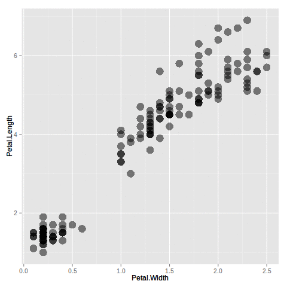
gpplot2
Histogram
# Load the library and the data
# install.packages('ggplot2', dep=TRUE)
library(ggplot2)
iris
# Histogram of petal width
histograma <- ggplot(data = iris, aes(x = Petal.Width)) + # first layer
geom_histogram() # second layer
# Call the plot to see it
histograma
## `stat_bin()` using `bins = 30`. Pick better value with `binwidth`.
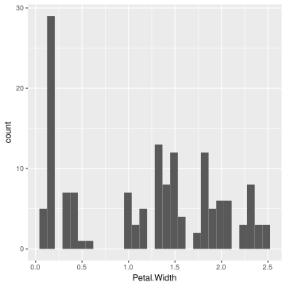
ggplot2
Points
# Width-Length relation
puntos <- ggplot(data = iris,
aes(x = Petal.Width,
y = Petal.Length)) +
geom_point()
# Call the plot to see it
puntos
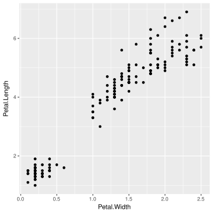
ggplot2
Box-plots
# Width by Species
cajas_petalo <- ggplot(data = iris,
aes(x = Species, y = Petal.Width)) +
geom_boxplot()
# Call the plot to see it
cajas_petalo
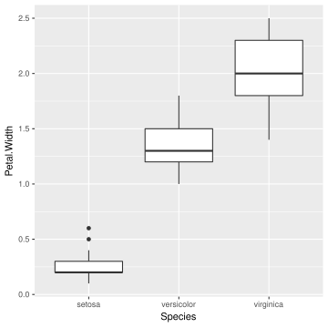
ggplot2
Colors
# Build the plot wothout geometry
puntos_petalo <- ggplot(data = iris,
aes(x = Petal.Width, y = Petal.Length))
# We add color, the same for all points
puntos_petalo + geom_point(color = 'red', size = 4, alpha = .5)
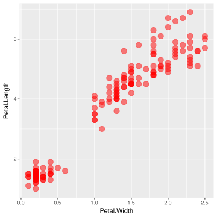
ggplot2
Colors and shapes
# We map the color to a variable (remember, we do that in the aesthetics)
puntos_petalo + geom_point(aes(color = Species), size = 4, alpha = .5)
# We map the shape to a variable (remember, we do that in the aesthetics)
puntos_petalo + geom_point(aes(shape = Species), size = 4, alpha = .5)
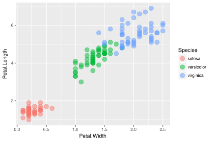
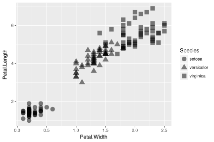
Exercise 1
Build the plots that we have already seen, but for sepal data
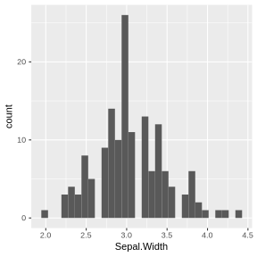
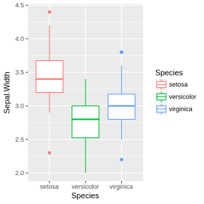
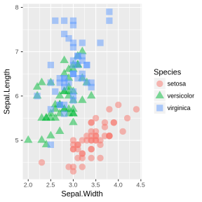
ggplot2
Facets and Stats
# Lets save in an object the plot we want
plot_petalo <- ggplot(data=iris, aes(x=Petal.Length, y=Petal.Width, color=Species)) +
geom_point(size=4, alpha=.5)
# Now we divide it in facets
plot_petalo + facet_grid(. ~ Species)
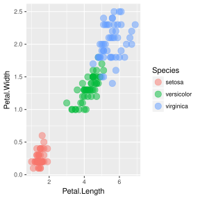
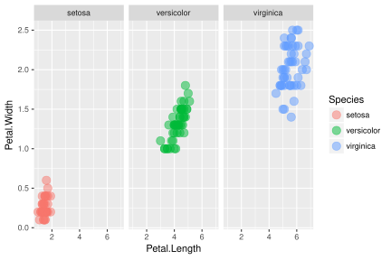
ggplot2
Facets and Stats
# Si queremos por filas
plot_petalo + facet_grid(Species ~ .)

ggplot2
Facets and Stats
# We can add a lineal regression to all the data
plot_petalo + stat_smooth(method='lm')
# or combining stats with facets
plot_petalo + facet_grid(. ~ Species) + stat_smooth(method='lm')
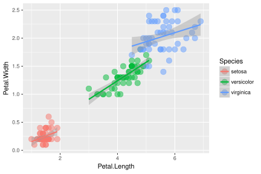
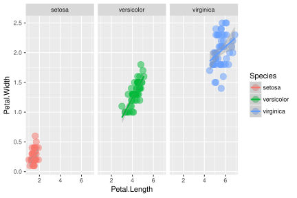
ggplot2
Facets and Stats
# As we are simply adding layers, we can add another abline calculated
# with all the data. For that we need to "break" the grouping we made with
# the color aesthetic
plot_petalo + stat_smooth(method='lm', se=FALSE) +
stat_smooth(color='black', method='lm', linetype=2)
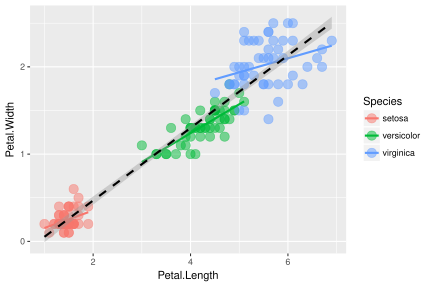
ggplot2
Facets and Stats
# There is more stats, like density
ggplot(data=iris, aes(x=Petal.Width)) +
stat_density(color='red', alpha=.5, fill='red')
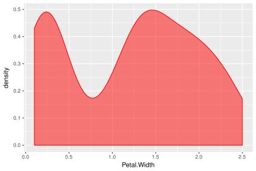
#
# or quantiles
plot_petalo + stat_quantile()
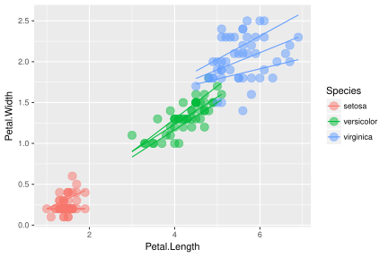
ggplot2
Scales
#
#
#
# Colour, shape or line type scales
plot_petalo +
scale_color_manual(values=c('red','green','blue'))
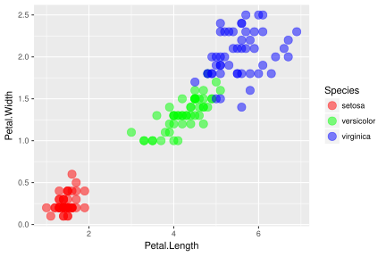
# Colour, shape or line type scales
plot_petalo +
stat_smooth(mapping=aes(linetype=Species),
method='lm') +
scale_color_manual(values=c('red','green','blue')) +
scale_linetype_manual(values=c(1,2,3))
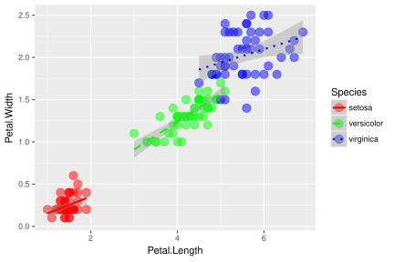
ggplot2
Scales
#
# Axis scales
plot_petalo +
scale_x_log10()
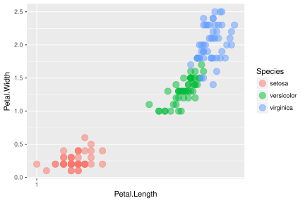
# Now we can do a loess smooth
plot_petalo +
scale_x_log10() +
stat_smooth(method='loess', color='black')
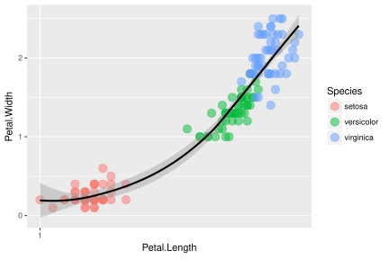
ggplot2
Annotations
#
# Plot title
plot_petalo +
labs(title='Width vs. Length (Petal)')
# Plot and axis title
plot_petalo +
labs(title='Width vs. Length (Petal)',
x='Length [cm]', y='Width [cm]')
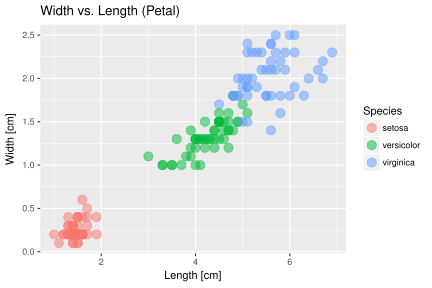
ggplot2
Personalización
#
#
# Preset themes
plot_petalo +
theme_bw()
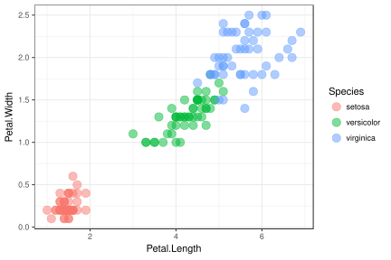
# ggthemes library
# install.packages('ggthemes', dep=TRUE)
library(ggthemes)
plot_petalo + theme_solarized(light=FALSE) +
scale_color_solarized()
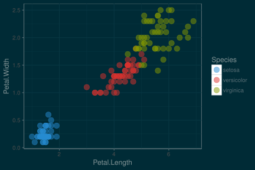
ggplot2
Customization
# theme customization help
help(theme)
# minimalist config
minimalista <- ggplot(data=iris, aes(x=Petal.Length,
y=Petal.Width,
shape=Species)) +
geom_point(size=4, alpha=.5)
minimalista + theme_bw() +
theme(panel.grid=element_blank(),
panel.border=element_rect(color='black'),
legend.position=c(.9,.2))
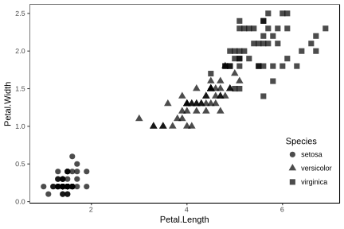
ggplot2
Customization
# web modification
web_plot <- ggplot(data=iris, aes(x=Petal.Length,
y=Petal.Width,
colour=Species)) +
geom_point(size=4, alpha=.9) +
scale_color_manual(values=c('#4183D7', '#19B5FE', '#22313F'))
web_plot + theme_bw() +
theme(panel.grid=element_blank(),
panel.border=element_blank(),
panel.background=element_rect(fill='#C5EFF7'),
legend.position=c(.9,.2),
legend.background=element_rect(fill='transparent'),
legend.key=element_rect(fill='transparent', color='transparent'),
text=element_text(color='#1F3A93'),
axis.ticks=element_line(color='#1F3A93'),
plot.background=element_rect(fill='#89C4F4'))
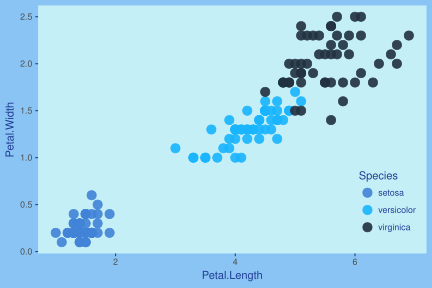
ggplot2
Extra Barplot with error bars
# data preparation with dplyr
library(dplyr)
iris %>%
group_by(Species, Treatment) %>%
summarise_all(funs(mean, sd)) %>%
# building the plot
ggplot(aes(x=Species, y=Petal.Width_mean, fill = Treatment)) +
geom_bar(stat='identity', alpha=.7, position = position_dodge()) +
geom_errorbar(aes(ymin=Petal.Width_mean-Petal.Width_sd,
ymax=Petal.Width_mean+Petal.Width_sd,
color=Treatment),
width=0.5,
position = position_dodge()) +
scale_color_manual(values=c('#4183D7', '#19B5FE')) +
scale_fill_manual(values=c('#4183D7', '#19B5FE')) +
theme_bw() +
theme(panel.grid=element_blank(),
panel.border=element_blank(),
panel.background=element_rect(fill='#C5EFF7'),
legend.position=c(.12,.8),
legend.background=element_rect(fill='transparent'),
legend.key=element_rect(fill='transparent', color='transparent'),
text=element_text(color='#1F3A93'),
axis.ticks=element_line(color='#1F3A93'),
plot.background=element_rect(fill='#89C4F4', color='#89C4F4'))
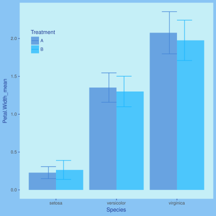
ggplot2
Extra Maps
# Data preparation
crimes <- data.frame(state = tolower(rownames(USArrests)),
USArrests)
# Map data (from "maps" library)
# install.packages('maps', dep=TRUE)
library(maps)
states_map <- map_data("state")
# Build the plot
mapa <- ggplot(crimes, aes(map_id = state, fill = Murder)) +
geom_map(map = states_map) +
expand_limits(x = states_map$long, y = states_map$lat) +
coord_map()
mapa
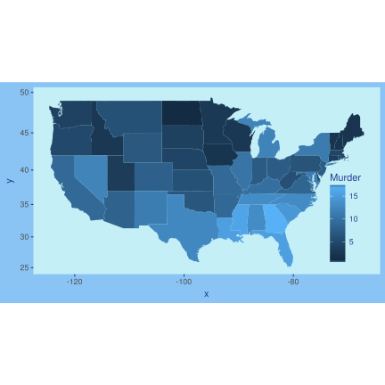
ggplot2
Extra Interactive maps
# libraries
# install.packages('leaflet')
library(leaflet)
# data
long <- c(2.1093)
lat <- c(41.500821)
que <- c('CREAF')
data <- data.frame(long,lat,que)
# interactive map
leaflet(data) %>%
addTiles(urlTemplate = 'http://server.arcgisonline.com/ArcGIS/rest/services/World_Imagery/MapServer/tile/{z}/{y}/{x}',
attribution = 'Tiles © Esri — Source: Esri, i-cubed, USDA, USGS, AEX, GeoEye, Getmapping, Aerogrid, IGN, IGP, UPR-EGP, and the GIS User Community',
options = tileOptions(noWrap = FALSE)) %>%
setView(lng = 2.1093, lat = 41.500821, zoom = 17) %>%
addCircleMarkers(lng = long, lat = lat,
radius = 10,
fillOpacity = 0.7,
fillColor = "#FDE725",
stroke = FALSE) %>%
addPopups(lng = long, lat = lat, popup = 'CREAF')
Exercise 2
Lets do something different (at least with different data). In the next exercise
we are gonna use the airquality data set. This data set describes the ozone
concentration (Ozone), solar radiation (Solar.R), wind (Wind) and
temperature (Temp) from May (5) to September (9), 1973 in New York City.
We want to represent the relation (if any) between ozone concentration and
wind, building a plot with the following elements and layers:
- Title ('Ozone vs. Wind')
- Axis titles (x 'Wind [mph]'; y 'Ozone [ppb]')
- Colour by month
- Abline foer each month, without the standard error shade
- Custom scale for color and line type (at your taste)
- Custom legend to indicate the month name instead of the number
Once we got the previous plot, save it to an object and use it as a starting point to change the plot background (to 'lemonchiffon') and add facets for each month
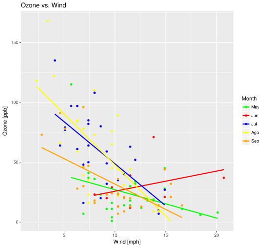
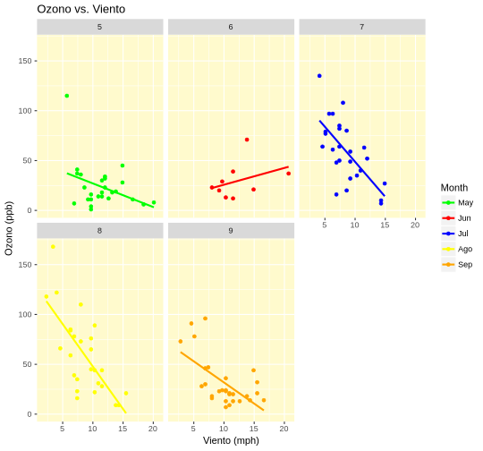
Muchísimas gracias
Para cualquier duda o consulta podeís encontrarme en: